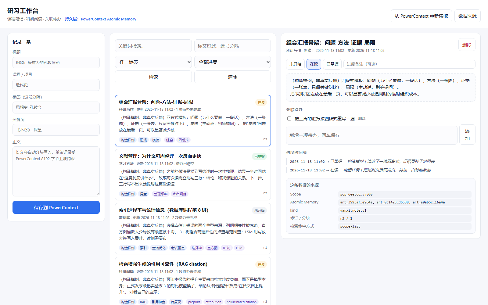
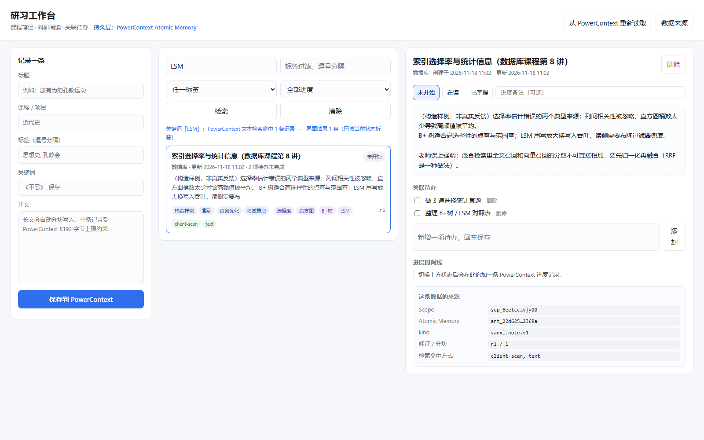
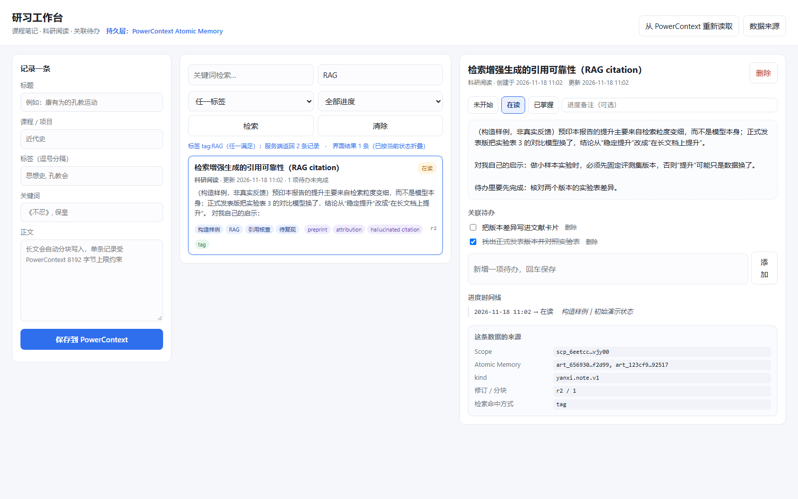
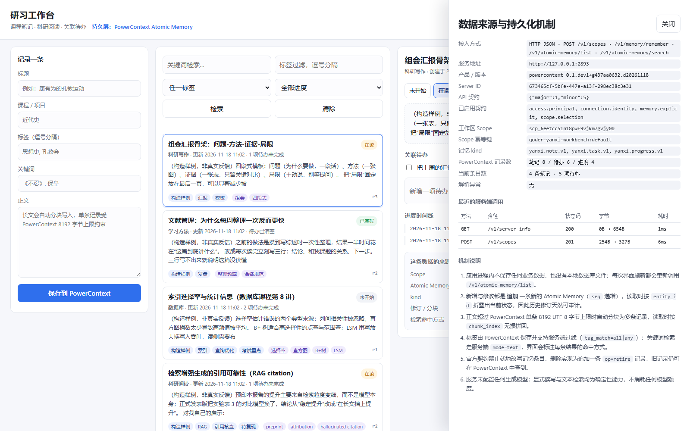

需求拆解
从官方题面提炼“必须真实使用 PowerContext、不能只做连通性检查、必须本地可复现”的硬约束， 并把它写成任务清单与验收口径。
Qoder × OceanBase 大赛 · Build with Qoder
一个本地运行的学习科研工作台：记录一条资料、给它打标签和关键词、挂上关联待办、切换阅读进度。 应用进程内不保存任何业务数据，也没有本地数据库文件——每一次界面刷新都重新向 PowerContext 读取， 所以关掉页面、停掉服务再启动，数据仍然在。
本项目网站是作品展示与评审入口。完整功能在开发者本机运行（PowerContext 服务监听 127.0.0.1:2893， 应用监听 127.0.0.1:2894），页面上的截图均为真实运行结果，不是设计稿。
课程笔记在文档里、论文批注在 PDF 里、临时想法在聊天记录里。期末或组会前要翻十几个地方， 还是不确定哪条已经读透。
记录工具里只有正文，待办工具里只有任务，两者靠人脑对齐。一条笔记下一步该做什么， 往往要重新读一遍才能想起来。
本地 JSON、浏览器缓存、临时数据库都会随环境消失。想让资料长期可查，就得有个真正落盘、 能被别的进程读回来的存储。
研习工作台的取舍是：把“资料 + 标签 + 待办 + 进度”统一成一组可追加的上下文记录， 交给 PowerContext 保存，检索直接用它的文本与标签能力。
标题、课程/项目、标签、关键词、正文一次写入。正文超过 PowerContext 单条 8192 UTF-8 字节上限时
自动分块，读取时按 chunk_index 无损拼回。
关键词走服务端 /v1/atomic-memory/search（mode=text），
标签走 list_atomic 的服务端标签索引，支持任一/全部满足。界面会标注每条结果的命中方式，
不把工作退化成一次字符串包含判断。
给一条资料挂待办、勾选完成、再删除。列表卡片直接显示“几项待办未完成”， 阅读状态和下一步动作留在同一条上下文里。
未开始 / 在读 / 已掌握每次切换都追加一条进度记录，可带备注。 时间线按笔记修订号排序，同一秒内连续切换也不会颠倒顺序。
应用没有缓存，也没有本地库。重启 PowerContext 服务后重新读取， 条目数量与记录摘要保持一致——这一点有专门的端到端脚本验证。
顶栏“数据来源”展开后显示 Server ID、包版本、API 契约、Scope、记忆 kind、 记录条数和最近的服务端调用（方法 / 路径 / 状态码 / 字节 / 耗时）， 评审能直接核对指定技术是否真的在起作用。

r3 表示这条笔记在 PowerContext 中已追加 3 个修订，时间线最后一条“在读”与卡片状态一致。
text / client-scan 命中方式标记。
tag。
它是这个应用唯一的存储与检索层。删掉服务，界面立刻报错并拒绝写入——没有任何“本地文件顶上”的降级路径。
| 接口 | 项目中的用途 | 核对方式 |
|---|---|---|
POST /v1/scopes | 为每个工作区建立上下文 Scope，用幂等键复用 | 数据来源面板显示 Scope 与幂等键；重复启动不会产生第二个 Scope |
POST /v1/memory/remember | 写入笔记 / 待办 / 进度的每一条修订（追加，不就地改写） | 改一次标题，记录数 +1；旧修订仍能查回来 |
POST /v1/atomic-memory/list | 界面刷新时按 kind 全量读回并折叠成当前状态；标签过滤也走这里 | 数据来源面板的调用表；重启后端到端脚本比对 |
POST /v1/atomic-memory/search | 关键词检索（mode=text） | 检索提示行显示服务端命中条数 |
GET/PUT …/artifacts/…/tags | 把标签与关键词存到服务端标签索引，替换时强制 If-Match | 标签过滤返回记录数；并发修改会返回 412 并重试 |
官方 remember.text 上限是 8192 UTF-8 字节。写入前按“序列化后的信封”计算预算并分块，
读取时按 chunk_index 拼回，长正文有专门的测试覆盖真实字节边界。
官方契约不允许就地改写记忆条目，所以每次修改追加一条 seq 递增的记录，
读取时按 entity_id 折叠。删除实现为追加 op=retire，历史仍可审计。
部署时显式记忆抽取保持关闭（atomic_memory.extract = disabled / provider_not_configured），
读写与文本检索都是确定性能力，不配置任何模型、不产生额度消耗。
接入方式：官方仓库 oceanbase/powercontext 分支 2026-competition-ecosystem
（提交 437aa0632）构建的 wheel，版本 0.1.dev1+g437aa0632.d20261118，
以 DATABASE_KIND=sqlite、HTTP_HOST=127.0.0.1、ACCESS_MODE=disabled
启动，并带 --no-env-file，不加载任何凭据文件。
--python 指向你自己安装的解释器vendor/ 的 wheel 提供vendor/powercontext-*.whl + 许可证 + requirements.powercontext.lock（122 项精确版本）.runtime/powercontext，凭据文件从不被读取bash scripts/setup_pc_env.sh --python /path/to/python3.12新建自己的 venv，安装 vendor/ 里的官方 wheel（builtin,server,cli extras），并重新生成依赖锁。
bash scripts/replay_lock.sh --python /path/to/python3.12在全新 venv 里按锁安装 122 项依赖，再装 vendored wheel，证明换目录也能装。
bash scripts/start_pc.sh start
bash scripts/start_pc.sh status服务在 127.0.0.1:2893 就绪后，status 会打印 server_id 与版本。
PYTHONPATH=src python -m yanxi.server --port 2894浏览器打开 http://127.0.0.1:2894；顶栏“数据来源”可核对当前连接到的服务。
PYTHONPATH=src python scripts/seed_demo.py写入的是构造的验证样例，用于展示检索、待办与进度；不代表真实同学反馈或使用效果。
PYTHONPATH=src python -m pytest -q -rA
PYTHONPATH=src python scripts/verify_pc.py
PYTHONPATH=src python scripts/e2e_restart.py分别覆盖单元/接口测试、原始接口核对，以及“停止服务→重启→数据仍在”的端到端流程。
| # | 操作 | 预期结果 | 指定技术的作用证据 |
|---|---|---|---|
| 1 | 新建笔记「B+ 树与 LSM 树对比」，课程“数据库”，标签“索引、考试重点”，关键词“写放大” | 提示“已写入 1 条 Atomic Memory 记录”，列表出现该卡片，卡片右下角 r1 |
数据来源面板显示 POST /v1/memory/remember 返回 200/201 |
| 2 | 关键词框输入「写放大」，点检索 | 提示行显示服务端文本检索命中 1 条记录，卡片带 text 标记 |
POST /v1/atomic-memory/search（mode=text） |
| 3 | 标签框输入「索引」，切换“全部满足”后检索 | 显示服务端返回记录数，命中方式标为 tag |
标签存在服务端标签索引，过滤由 list_atomic 完成 |
| 4 | 给该笔记添加待办“手推一次分裂”，勾选完成 | 卡片显示“待办已清空”，待办产生两条修订记录 | 待办同样是 Atomic Memory，可查回 seq=1、2 |
| 5 | 把状态从“未开始”切到“在读”，备注“看完 8.1” | 进度时间线追加一条，笔记修订号变为 r2 |
进度记录 kind=yanxi.progress.v1 独立可查 |
| 6 | 刷新页面 / 关闭再打开浏览器 | 条目、待办、进度全部还在 | 界面数据完全来自 /v1/atomic-memory/list，应用无缓存 |
| 7 | bash scripts/start_pc.sh stop 后再 start |
停止期间界面报错且拒绝写入；重启后条目数与记录摘要一致 | scripts/e2e_restart.py 10 步全部通过并留存 JSON 证据 |
| 8 | 粘贴一段超过 8192 字节的长正文并保存 | 提示写入多条记录，读回后正文与原文逐字一致 | 分块写入与 chunk_index 拼接由真实字节上限驱动 |
截图中的四条笔记（组会汇报骨架、文献管理、索引选择率、RAG 引用可靠性）及其标签、待办、进度备注，
都由 scripts/seed_demo.py 构造，用于展示检索、关联待办与重启恢复的完整链路。
这些文字不是真实同学反馈，也不是提效数据。界面会在进度备注与正文中保留“构造样例”标记。
项目已提交的是工程可复现性证据：37 项自动化测试、12 项原始接口核对、10 步重启恢复验证，
结果文件都在仓库 qoder/evidence/ 下。真实用户规模与提效对比尚未开展，
因此本页不给出“节省多少小时”这类数字；本站点的访问统计可作为后续真实使用的起点。
从官方题面提炼“必须真实使用 PowerContext、不能只做连通性检查、必须本地可复现”的硬约束， 并把它写成任务清单与验收口径。
用 CLI 与 HTTP 实测官方 wheel 的能力边界（8192 字节上限、标签替换必须 If-Match、
禁止就地改写、检索模式），据此确定“追加式事件日志 + 读取时折叠”的领域模型。
实现 pc.py（类型化客户端 + 调用追踪）、store.py（笔记/待办/进度折叠与分块）、
server.py（标准库 HTTP 层）与三栏界面；PowerContext 故障一律返回 502 并给出可执行的排查提示，
绝不伪装成成功。
先用内存替身跑通领域规则，再对真实服务跑同一批断言；修复过字节预算算错、 HTTP 头大小写导致取不到 ETag、同秒更新排序反转等实际问题，每项都有对应回归测试。
用 Qoder 生成真实截图、编写运行说明与验证样例，并通过 Qoder Sites 发布本站点。
公开仓库 YHR123960/oceanbase-powercontext，
本项目全部资产在 qoder/ 目录，开发分支 competition/qoder-productivity
（基于官方 2026-competition-ecosystem）。
qoder/src/yanxi/ 应用与领域层qoder/web/ 零构建前端qoder/tests/ 37 项测试qoder/scripts/ 环境、启动、验证脚本qoder/evidence/ 运行日志、截图与验证结果qoder/vendor/ 官方 wheel 与许可证应用本身只用 Python 标准库。PowerContext 以官方 wheel 形式内置于 vendor/，
许可证随文件保留；依赖版本由 requirements.powercontext.lock 精确锁定，
并注明 wheel 的 SHA-256 校验值。复用开源代码处均注明来源。
wheel sha256 cd9ef57783eed3689b69be829003b649e0ac6c09ec05b2ed679424191de0aa14